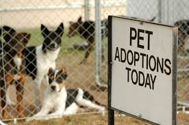
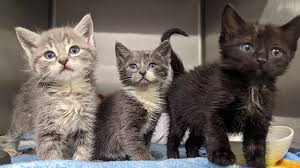
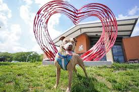

Our Rescue Shelters



About This Rescue System
Pet Welfare & Adoption Centre is dedicated to rescuing, caring for, and rehoming stray, abandoned, and surrendered animals. Our mission is to connect loving homes with pets in need while promoting responsible pet ownership and animal welfare. We provide shelter, medical care, and adoption services for pets of all types and ages. Our team works to ensure every animal gets a second chance at a happy, healthy life. We also support owners who can no longer care for their pets, offer a Lost & Found platform, and encourage community involvement through donations and volunteering. Join us in making a difference—because every pet deserves love, care, and a forever home.